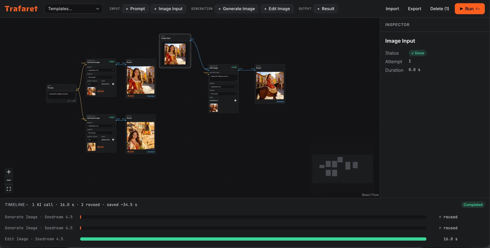
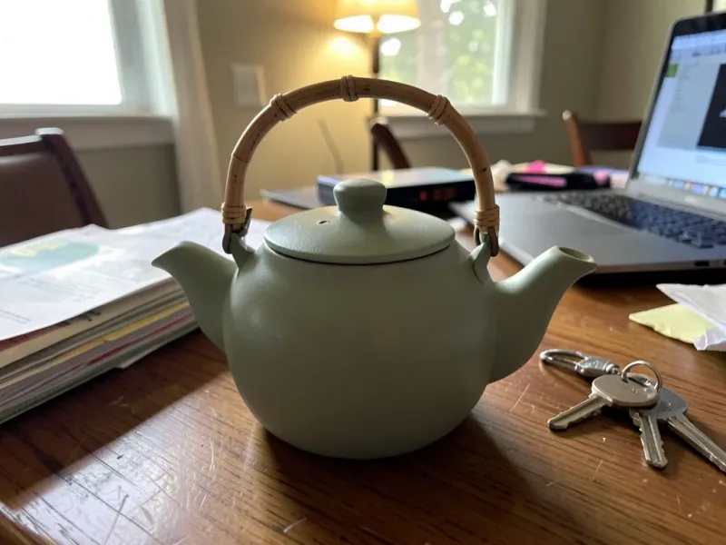

Web app · AI images · Open source
Trafaret is a node-based editor for AI images. Put a prompt, a photo, Generate, Edit and Result blocks on a canvas, wire them up, pick a style and press Run. Independent branches render side by side, a failed block retries on its own, and the next run redraws only what changed. Trafaret is Russian for stencil.
The demo runs on a free instance: the first visit after a quiet spell takes about a minute to wake it up.

Every block's result is stored under a fingerprint of its inputs: the prompt, the model, the style, the seed and everything upstream. Change one style and only its branch goes back to the AI; the rest comes back instantly, and the timeline says how much time that saved. Want a new take? 🎲 gives a block a new seed.
A block starts the moment its own inputs are ready, so independent branches overlap instead of waiting in line. When one AI call fails, only the blocks that need it stop; Retry runs that part again without touching the rest. Nothing paid is ever retried behind your back.
A style preset is a prompt, things to avoid and reference images. The server merges it into each request at run time, and the inspector shows exactly what was sent to the AI — the final prompt and every image, with its role.
Real FLUX.2 klein output from the demo's templates: one prompt in two styles, and a casual product photo moved into a new scene.

A workflow is plain JSON: export it from the editor and post it to /api/runs with
curl. The API reference is live too.
There is nothing to sign up for, and no cookies or analytics. A prompt or photo you run goes to the provider of the model you picked; the server keeps it in memory only, until it restarts. Your workflow stays in your own browser. The privacy policy says exactly that.